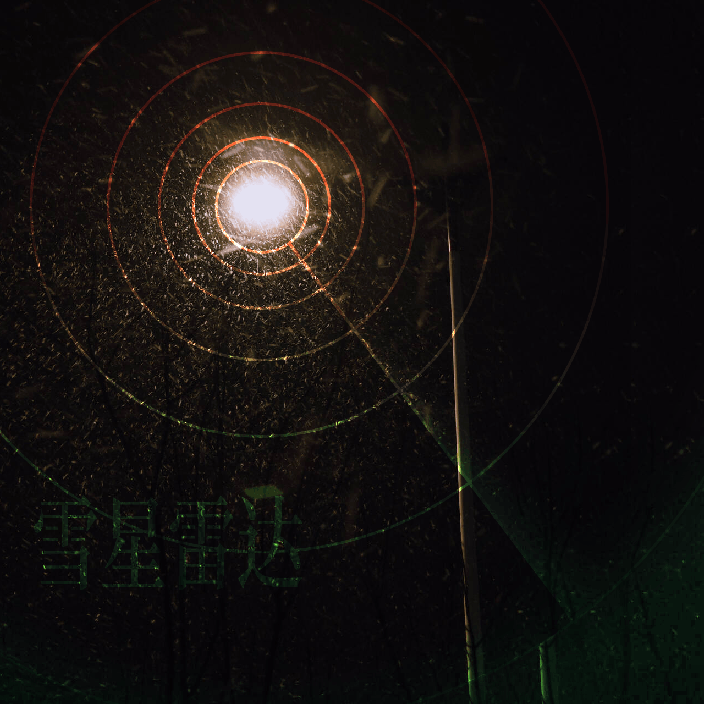

半燃
其八
初雪轻踏
索引
初雪
周日盼望着的雪，终究还是没有下下来——但周一凌晨的时候，的确有雪花开始飘落在校园里了。只不过下的倒是不大，甚至不及小狗撒尿，让我想起南方毛毛的细雨。何况宵禁的门锁固若金汤，我只能从装了限位器的窗户伸出半只的手臂，感受一下初雪的动量。我是能从松散的质感上分辨出来这是雪，而不是伪装的雨；但一把手抽回狭小的室内之后，也只能看到消融的水渍了。于是只好悻悻睡去，想起晚来天欲雪的诗句，又喝了半瓶久违的威士忌，上床看《甲贺忍法帖》了。
不知是宿醉的缘故，还是由于什么别的希冀，往常睡到中午的我，竟然在九点钟就自然地醒来了。室友也几近是在这个时候醒来的，他走到阳台，回来后神情激动让我看看外面。于是我看看外面——确乎是一片苍茫，虽不及冰封雪飘的北国风光，但也算是白茫茫的一片了。雪早已经停住了，而零下的温度也催眠了活跃的分子，把熔化的过程也一齐慢了下来。他叫着我下楼去看看，然而我这时的头疼还没完全好。
我是在南方长大的，尽管我妈说我小时候来过冬天的北方，但我记忆里实在是没有雪的印象。难得的，这算是我第一次看到雪了，尽管好像并没有什么实感。我总是对莫名的事物有莫名的期待，而新奇感又褪去地很敏捷。不过，当我穿着帆布鞋踩在雪上的时候，才发现原来是这样的体验啊。
好吧，由于睡眠不足，我一整天都有点神志不清，也无暇去激起什么高级的美的旨趣了，不过看到路旁混着泥浆的灰雪的时候，我承认我有点幻想破碎，并且刚刚意识到雪其实和雨水的成分差不太多，而且我在的这里叫做沙河。
写于 12 月 11 日夜，怎么说呢，有些怅然若失（不过这只是平常的天气现象吧）。
反转了，之后下了更大的雪。
生活
这周看了 《甲贺忍法帖》 ，一部忍者主题的动画。故事中，原本达成和平协议的两派忍者家族，因为一条德川家康的命令开始互相残杀。而在荒唐无谓的战争之中，不乏渴望和平的人，却被形势裹挟，无力回天。故事中有大量对比，上一秒还在温馨日常的忍者们，下一秒就要投入尸山血海的战争。双方都不是有错在先，所有人都是无力回天的棋子，而看到莫名的相杀实在是令人悲伤。战争总是残酷的，而被利用的战争更加剧了悲剧的意味。第一话的标题是相思相杀，最后一话的标题是来世邂逅——江水流逝之后，无人生还。多希望和平会来到啊，在甲贺和伊贺的村落，在这个战火不断的世界上。
文章
何为 Bento 式布局，怎么生产力工具网站都在用？ & 什么是 Linear 设计风格？
这两篇文章介绍了网页设计的一些内容——我只会说好酷炫。风格真的挺好看的，不过我做不成这样😭
讨论 TGA 和年度游戏时，我们还可以聊些什么？
这篇文章介绍了 TGA 这个电子游戏大奖的一些方面。TGA 刚刚结束，在社交平台上激起的讨论可远远没有停止。我始终不太相信 TGA 的专业程度，不过主要还是因为我的口味和那些评委都不一样吧。不过每年的“年度最佳”，总会引来许多冠军粉的争论，我还是觉得挺莫名其妙的。哦对了，我之前玩的《Cocoon》果然预料之中地没有拿到奖，不过我早就给它颁奖了。
机器人可以取代米开朗基罗吗？
这篇文章讲述了利用机器人进行工作的雕塑家们。文中有一段问答，由作者向工匠们提出问题：
“你认为米开朗基罗会使用机器人吗？”
“他当然会！”
不过文章的标题让人感觉很奇怪， 米开朗基罗做的事情不是凿石头，而是雕塑。 我感觉技术恐慌似乎还在蔓延，让我们以为工业机器人和生成式 AI 都要取代创作。实际上前者做的只是体力工作，而后者做的目前最多算是低级的脑力工作，二者应该有明显的区别。应当认为机器人和锤子斧头关系更密切，而 AI 像是在一旁献计献策的（初级）学徒，这是微软的 AI 服务取名 Copilot（副驾）的原因，也是我现在的看法。 米开朗基罗不可取代之处是米开朗基罗的表达，是他的主观能动性，而不是米开朗基罗敲击石块的动作。
这个时代对创意工作者的挑战尤其严峻。但既然叫做创意工作者，而不是内容生成者，或许更应该自豪，为了深夜的幻想，为了对世界的洞察，为了悲痛与爱。去做些被数据集忽视的东西吧，可被统计的不是创意。
CSS 封装：2023 年！
这是谷歌关于 2023 年 CSS 发展的总结。然而我只是学了基础，这里面的一个都没见过。不过可能以后我的网站会用到里面的内容，我现在有很多想要做的功能，但是目前都还没有做。Stay tuned!（画饼中
Wetware (brain)
这篇维基百科页面介绍了“湿件”的概念。非常酷词汇，爱来自科幻。
为什么你应该试试一句话换一行 & Writing one sentence per line
这两篇文章推荐在 markdown 的源文本写作时写一句换一行。这样子有一些好处，比如说可以控制句子节奏、理清逻辑、方便版本查询、减少废话。看上去还不错，于是我在这篇周报的时候切身地尝试了一下，发现这种方法并不太适用于我的写作。
最难以接受的一点就是，频繁的换行破坏了我的写作体验。我需要在每一次添加标点之后按下回车，而回车键的位置注定需要我的手移动一段距离。这样频繁的操作打断了我连续的输入，而且也很累人。
这种方式不仅仅在体验上造成了影响，也从视觉上割裂了句子之间的联系。格式塔心理学告诉我们，距离更近的事物会被认知成一个整体。 而面对竖向排开的语句，我不像是一个写作者，而像是一个批评家了。 当然，可能这就是作者这样做的目的：审视自己的文本。但我写的东西大可不必这么严肃，还是一口气写到 头为好。
不过我也在这种尝试中发现了我写作的一些习惯，这种时候，平时注意不到的细节都被放大了：我一眼扫下去，发现我句首关联词用的特别多。然后我发现（你看现在就在用关联词了）我用表示转折的关联词好像很多，而且有时候是一些莫名其妙的转折。可能这就是我的写作习惯，我在想是不是可以用什么自然语言处理之类的方式分析一下我写作的特点，感觉挺有意思的，之后可以试试。
在我随笔式的写作中，我发现这种写法并不合适。不过我对它在严肃文本写作中的能力还抱有一定的乐观态度，说不定这真的会让技术文本更加清晰易懂，如果有机会的话我会再测试一次的。
性别可以被强行更改吗？“世界上最成功变性人”之死
这篇文章记录了大卫·赖默的一生。这是一篇让人悲伤的文章，起于父母朴素的动机，却导致了不幸的结局。科学家莫尼的做法完全就是把大卫当作实验对象，缺乏对孩童的尊重。大卫被强行抛入了一个规范，罔顾本人意愿，他又该如何适从新的身份？性别是复杂的事情，我知之甚少，但我尊重大卫的选择。他一生经历了太多不公，而他仅仅是想过上普通的生活。希望未来的世界会更加的性别友好，而再没有如此的悲剧发生。
创作
无论是雪、雨，还是灰尘，迎着光的时候总是看得更清楚，不觉得很像雷达吗？于是我就简单做了这张图片，感觉有些勾式，不过还是放上来吧。
技术播客节！
最近正值 技术播客节 ，许多和信息技术有关的播客都参与了活动，产出了大量有趣的播客内容。虽然我只是作为一个学生，还没有参与到工作当中，我也从里面了解了不少知识，也大概对行业有了一点粗泛的了解。不过听完之后，我对就业的焦虑还加深了不少，当然肯定不是节目的原因，我在纠结我要做什么方向的工作。
我感兴趣的方向太多，却似乎一无所长，永远只是泛泛而已。全才是很令人向往的，但在统计学的意义上，付出的时间更多，水平肯定就是更高的。我愚笨而慵懒，不可能有天才们那般对时间的掌控，这样看来我的想法可能就是纯纯的幻想时间了吧。不过我还是会再继续探索一段时间的，或许到了时候找一个自己满意的方向，或许被生活推搡着，盲眼掉进深暗的坑——谁知道呢？
不过这个节日真的很好，听播客的时候感觉非常不错，我会感觉听众比起观众来更加靠近现场，我粗略地想，可能是因为看视频的时候，我们会幻想出深度的信息，摄影机也像是旁观的视角；而音频的电平和现实中的远近几乎是对应的，所以可能播客会更像是一场现场的谈话。当然这是完全没有依据的分析，不过倒是没什么所谓，我喜欢播客，其实是我喜欢里面的自然感。没有什么精密的组织和编排（当然可能会有一个大纲），只是大家关于一个主题，即兴地发表自己的看法——说到底其实就是聊天嘛。我也喜欢和朋友漫无目的地闲聊，如果有机会的话，我也是很想做一些类似这样的东西的（？
好吧我又在这里挖坑了，不过如果有兴趣的话，不如去听听这些电台吧！
试着穿了裙子（？
“我喜欢穿裙子，因为它们很舒服”
“没有什么比温馨的花朵图案更舒适的了。穿着连衣裙感觉舒适、性感、自由，好有趣。”——柯特·科本
于是我这周买了条裙子，体验一下柯本说的感觉。抛开现代的成见，古中国有说“上衣下裳”，在欧洲也有不少民族把裙子当成传统服饰，无关性别——但这始终没有什么说服力，规训的力量是很强大的。走在路上的时候，我确实会感到有人在看我，不过我倒是没什么所谓。爱怎么看怎么看，关我什么事情。
穿裙子确实有一些不习惯的地方——在大风的天气里我甚至走不动路。裙子像一面庞大的帆，我完全迈不开步子，被风吹得乱飞。然后是上楼梯的时候，我算是明白为什么影视作品里为什么要提着裙子了，不是为了什么优雅，是因为不提起来的话，我直接踩裙子上可能会滑下楼梯。总之我可能还要再适应一下，才能不让裙子被各种奇怪的东西卡住。
不过说到底还挺好玩的，而且很好看啊。
踏雪寻……
踩雪的体验是很新奇的。这也合理，毕竟我以前也没有见过雪。面对没有接触过的事物，像孩子一样去摸一摸总是合乎天性的。当然，我确实是摸了，不过当时没带手套，摸完之后已经感觉不到手的存在了。
好吧，手感这个事情不太好体会（我大概懂了），那可以试试雪踩起来是什么样子的，这总安全得多了吧。这周断断续续的有降雪，路面基本一直覆盖着积雪。不过要说安全，也不能算——积雪厚度不够的时候实在是非常的滑，我屡次要和雪地来一个亲密接触了。那天拿着高高的快递走在路上的时候，我实在是如履薄冰，而雪确实可以算一种冰晶，虽然和成语的原意不大一样。
在雪积起来的时候（嗯……积分？），踩雪这件事才让我觉得好玩了起来。雪有一些像南方海边沙子的质感，只不过更加松散。每每踏上一步，身体把雪层压紧的时候，你会听到干涩的、摩擦和挤压的声音，这很神奇吧，明明一氧化二氢在平常生活中给人的印象是更加温润的。踩上崎岖的雪面，脚却稍稍陷下去的时候，我不由得联想到了南阳的黄泥，想起来我还在那样疯狂的环境里行走过呀。不过相比起来，还是踩雪轻松一点，而且我知道雪下是坚实的地面。
于是，没见过世面的我，在雪天里终日地踩雪。踏雪按道理来说是要寻梅的，可我在这也没见过梅花，不过无所谓了，寻些别的也好；或者，单纯地什么都不寻找，玩耍就挺好的了。
永远翻滚！
《甲贺忍法帖》里有一句，“被雨所染”，而我是真真的被雪所染了。细碎的雪晶飘落在我黑色的大衣上，也抗拒着滑落，只是紧紧吸附着，弄得我一身都是白色的颗粒了。
染雪回到宿舍的时候，我挂好身上沾着水渍的衣服——紧紧依偎的雪花在暖气的威力下也不得不消失了——然后听见微弱的曲调。我发现音乐是从我悬挂着的的耳机里传出来的，而我看到任务栏的图标，发现上课之前我好像忘记停止了，于是歌单里的音乐一直在循环播放。
戴上耳机的那一刻。不对，不是那一刻。而是掰动横梁，把耳机置于我两耳上方的时候，再到我完全松开手，调整好耳机的位置的过程中，青山吉能的歌声由远至近，吉他声逐渐显现，鼓的力度开始增加，最低频的贝斯稳稳的落下，然后我与整个世界隔离。这是一种行为式的滤波，由高频开始，逐渐切向最低的频率，到最后，我再听不见外面的声音了。
真好啊，尽管我对着屏幕删改了一个小时不知道该如何描述我的心情，不过我觉得这种体验真的非常的好。继续 Rolling，永远翻滚吧。
暖气
我还是不太喜欢 太温暖的 暖气。坐在这样的房间里，我感觉我都要晕了。房间的温度实在是太高，而且干的过分，总让我昏昏欲睡——但我试图去睡觉的时候却根本睡不着。不过想到外面冻手的风，开一点还是好的，至少我的手能写字了。可能之后我要想办法找一个靠门或者离暖气都远一点的地方，免得昏迷过去。
冰冻
周四的时候，我发现我晾在阳台的衣服冻住了，顿时悲从中来。流感、考试、大作业，这些问题我都能解决；但是衣服冻住了，我真的很难过。这种事情就像经济不景气，失业率上升一样，我什么办法都没有。
大洋彼岸的通用型人工智能正在酝酿，我的课程还在继续学一些奇技淫巧。这种事情不如让人工智能来学，那我的 人类智能 是用来干什么的？我总是感觉很无助。
我倒是很认同 AI 课老师提出的看法：后 CHATGPT 的现在，已经不是学习人工智能基础的时代了。整整一个学期的课他没给我们逐行讲过一次代码，我确实是这么想的。但是如果我连学习 AI 基础都没有用的话，我怎么去面对 AI 的时代呢？努力没有什么太大作用了，算死我全部的脑细胞，我也不可能达到 GPTv1 的算力。当然，和 AI 比没什么必要，总有人说只要比别人会用 AI 就能脱颖而出了。我感觉很可笑。被狮子追赶的羚羊只要跑得比同伴快就好了——可这次的狮子是无穷无尽的。到了最后，你又该把谁当作垫脚的石呢？
作为一个技术爱好者，我欣喜若狂，这个时代有太多伟大的发明了；但作为一个技术悲观主义者，我又不免得悲从中来，尤其是想到那些机房里的显卡仍然在彻夜狂鸣的时候。衣服还在阳台上冰冻。理性做不到许多事情，我们不知道，我们可能知道。（不过查了下知乎，只要把衣服拿到室内解冻就好了，我会试试的）
生活仍然悲伤
不知是在雪中浸淫太久，还是由于这凛冽的风，我感觉我是病了。
我终日地流鼻涕，以至于我开始思考这是不是一种保护机制：如果没有这些分泌物，我的鼻腔可能早就冻得发裂了。吸取了上次“畏寒日”的教训，我最近自然是没有怠慢这零下的温度，但是冷冻的天地啊，还是逐渐激活我全身的炎症。久愈的咽炎，和中耳炎一齐回来了，让我感受到一种持续的骚扰：疼痛倒是不多，却比嗡嗡的蚊子更加恼人。吃了几天的药，还是没有特别痊愈，索性还是就这样耗着，我的命怎么来说都比病毒来的坚强。
尽管带病的时候不该如此——我洗完澡之后痛饮了一大罐的冰啤酒。这是受葛城美里的启发，我买的也是她在剧中喝的 asahi（说到底其实感觉并没有什么特别但是还挺贵的），或许也算是一种致敬？说到这，我洗澡的时候才发现我的项链没摘。那也是一条葛城美里同款的十字状铝合金项链。广东的工厂使用 CNC 的工艺，再做上一层薄薄的磨砂，看上去竟然比官方联名的更有质感，而且价钱也便宜了不少，还是应该感叹二次元的钱真好赚以及现代工业的伟大——跑题了。不过昨天的时候室友倒是指着项链问我，“这是你的信仰吗？”我只是告诉他，好玩罢了。我自然是反基督的，同时也反一切圣人，幸福只能靠自己争取，光烧香拜佛是没甚鸟用的。不过在生病的时候，我感觉生活仍然是很悲伤。
前些日子我还说“莫名的悠闲”，一到病起的时候，事情就蜂拥而至了。而我确实是累了，只想在床上睡上整整的一天或者更多的日子——但还是昏沉地按掉闹钟，爬起来开始做数据结构的作业。事情多我倒是还能应付得来，毕竟有些事情去做就能解决，但生活越来越复杂了。
我总是感觉很茫然，但总是什么都想不明白，我唯一知道的，就是我想太多了。我高三最悲伤的时候写了一条日记，写“我羡慕乐观主义的人，若无其事地面对活，有说有笑地前进”，我那时候也和朋友说过，想的越多越悲伤，而我真真的想的太多了。按理来说这也正常，目前可能是构筑观念的关键时期，但我还是无法自已地觉得很糟糕。
我想，我过去做了太多错事了，却又追悔莫及。但我依然没有把握在未来做的更好，于是只能反复地去谏往者。我常常在反思我过去做过的事情，然后发现我总是在伤害别人，每每这种时候我感觉很伤心。我很笨拙地想去交些朋友，却总是做出这种事情，我在想，我是不是应该再消失一点比较好。
新年的事情不一定要在 31 号提出来，什么时候定下应该都是可以的。那么，新一年的目标是：再少说一些话，再多做一些事。但是这模糊得不像是一个可执行的目标，那就当作是一个愿望，或者一句提醒，反正也是说说罢了。
结
很遗憾拖更到了周一，上周实在没什么话说，于是这周我报复性地写了很多，但愿下周不要又说不出话了。这是 2023 年 12 月 11 日至 12 月 17 日、今年第 51 周、学期第十六周的周报。我刚刚一推算以为是我周数记错了，因为到了年末竟然是 53 周，查了一下好像今年确实有 53 周，而一年按理来说是 52.14 周，可能今年刚好叠上去了一周。奇怪的知识增加了，下周再见吧！